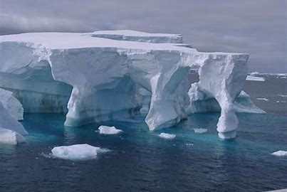
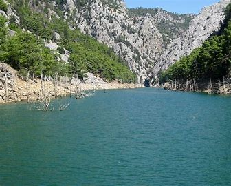
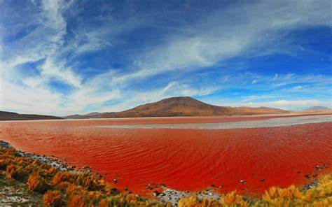
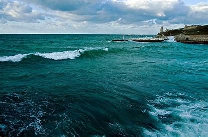
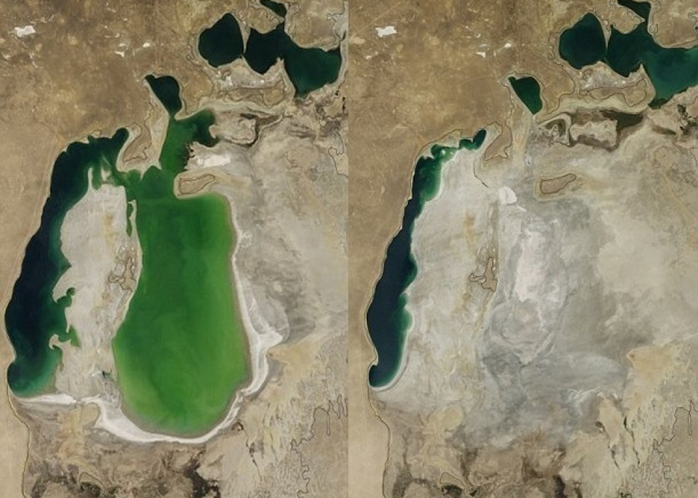
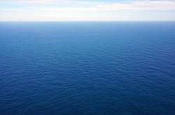

Воно знаходить біля Північної Америки.
Саме чисте море це море Уедделла.
Вся справа в тому, що море розташоване біля берегів Антарктиди, і з цієї причини практично все покрито шаром льоду. Саме тому воно таке чисте.
Саме маленьке море на планеті – Мраморне море. Розташоване в Євразії та належить Туреччині. Його площа всього 11 472 км², тому воно вважається найменшим морем на Землі1. Це море з’єднане з двома іншими морями – Егейським та Чорним
Саме сольоне море на Землі — Красне море. В ньому содержання соли достягает 41 г в литре води.
Більше всього видів риби в Чорном морі яке населяють понад 200 видів риби, із них 30 цінні промислові, такі як хасма,шпрот,тюлька,оселедець,та бички
За останні півстоліття обсяг Аральського моря зменшився майже в 10 разів, а четверте за величиною море в світі розділилося на кілька умовно самостійних водойм.В Аральському морі накопичилися мільярди тонн отруйних солей, які потрапили сюди з водою після промивання полів. За оцінками експертів, на висохлому дні Аральського моря знаходиться близько 107-114 млрд тонн солі. Ця обставина, а також загибель практично всіх нерестовищ призвели до катастрофічного скорочення популяції риб, яка налічувала близько 200 видів.
З будівництвом Каракумського каналу та Голодностепської зрошувальної системи відбулися значні зміни у водному балансі Аральського моря. Припинення стоку річок внаслідок надмірного зрошування призвело до висихання моря.
Води Середземномор`я забруднені, особливо в районах великих портових міст, нафтопродуктами і іншими відходами, - воно стає небезпечним для здоров`я людини
Морів в світі багато про всі нароскажеш, але назви написати можна.
Тихий океан
Mоре з особливою назвою Банда
Море Фіджі
Море Самар
Соломоново море
Море Коро
Море Хальмахера
Море Сулавесі
Берингове море
Море Сибуян
Море Сулу
Море Тувалу
Внутрішнє Японське море
Море Флорес
Молуккське море
Море Вісаян
Море Камотес
Південно-Китайське море
Море Акі
Море Соломоново
Море Мінданао
Море Балі
Східно-Китайське море
Тасманово море
Жовте море
Море Коро
Море Яванське
Море Японське
Море Сулавесі
Море Камотес
Яванське море
Атлантичний океан
Адріатичне море
Фракійське море
Балтійське море
Тірренське море
Чорне море
Ірландське мор
Егейське мореv
Мармурове море
Лігурійське море
Саргасове море
Середземне море
Море Лабрадор
Північне море
Левантінское море
Ваттове море
Кілікійське море
Азовське море
Море Ірмінгера
Карибське море
Балеарське море
Кельтське море
Іонічне море
Міртойское море
Кіпрське море
Гебридських море
Ікарійські море
Критське море
Альборан
Кельтське море
Індійський океан
Червоне море
Лаккадівськіє море
Тиморское море
Арафурське море
Андаманское море
Аравійське море
Північний Льодовитий океанн
Море Лінкольна
Море Баффіна
Біле море
Море Ванделяv
Східно-Сибірське море
Море Бофорта
Море Принца Густава-Адольфа
Норвезьке море
Карське море
Чукотському морі
Гренландское море
Печерському море
Баренцове море
Море Кронпринца Густава
Море Лаптєвих
Південний океан
Море Дейвіса
Море Росса
Море Космонавтів
Море Співдружності
Море Лазарєва
Море Скоша
Море Рісер-Ларсена
Море Амундсена
Море Сомова
Море Моусона
Море Дюрвіля
Море Беллінсгаузена
Це кінець сайту, дякую за те що посітили.